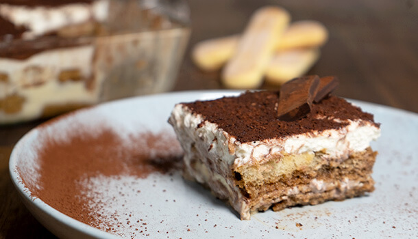

Tiramisu

Description
Tiramisu is a coffee-flavoured Italian dessert. It is made of ladyfingers dipped in coffee, layered with a whipped mixture of eggs, sugar, and mascarpone cheese, flavoured with cocoa. The recipe has been adapted into many varieties of cakes and other desserts.
Ingredients
- 2 XL fresh eggs
- 1 tub of mascarpone cheese (250g tub)
- 100g savoiardi biscuits
- 2 tablespoons of white sugar
- 350ml -- 1 1/2 cup of espresso coffee (prepared earlier and cooled down)
- 1 block of dark (or milk) chocolate
- Cocoa powder
- Icing sugar
Steps:
- Before making this authentic tiramisu recipe, you will need to start by making fresh coffee and allowing it enough time to cool down. Once cool, pour it into a bowl
- Once the coffee has cooled, is to separate 2 egg whites from the yolks, placing them into separate medium mixing bowls, then add one tablespoon of white sugar to each.
- Now, whisk each bowl individually, using a hand mixer. You can also whisk these ingredients by hand, but I think the result is much fluffier in texture!
- Your egg whites should foam up nicely – but make sure you don’t overdo it or they will break and curdle.
- Next it’s time for yummy mascarpone! This authentic Tiramisu recipe uses this very important ingredient for the perfect texture and flavour on your palette.
- Divide the mascarpone in two equal parts, adding half to the mixture with the egg yolk and the other half to the bowl with the egg white.
- Using a spatula, gently fold the mascarpone through, starting with the bowl of egg white first.
- For an authentic Tiramisu recipe, you need to use Savoiardi biscuits, or Lady Fingers. Dip a couple at a time into the bowl of coffee, wetting both sides at once by holding down for 3 seconds before placing each one into a pyrex or rectangular tray.
- Line the biscuits up closely, gently pressing them together so there are no gaps, and make sure you break any biscuits necessary and use them to fill the corners.
TIP: Place the biscuits with the sugar covered side facing down
- Once you have created the bottom layer following this authentic Tiramisu recipe, slowly pour over the mixture which has the egg yolk in it over the top, using a spatula to spread it over any gaps.
- Next up, dust some cocoa powder over the top, so it is completely covered, before grating some dark chocolate over the top (you can even just chop up the chocolate roughly adding it sparingly to the layer.
- Now, repeat step 8, creating another layer of savoiardi biscuits dipped in coffee before smothering them with the white mixture.
- Dust cocoa over the top, add some grated chocolate once again and then put your creation of this authentic Tiramisu recipe in the fridge overnight.
- Leave the Tiramisu in the fridge to set for up to 24hr for best results. The longer you leave it, the better it sets!
How to Serve:
Using dessert plates and a serving spatula, cut up a generous piece of tiramisu, place it gently on the plate and add a final dusting of cocoa powder. For a finishing touch, add a couple of thin pieces of dark chocolate standing up to each slice, or even a strawberry cut into two.